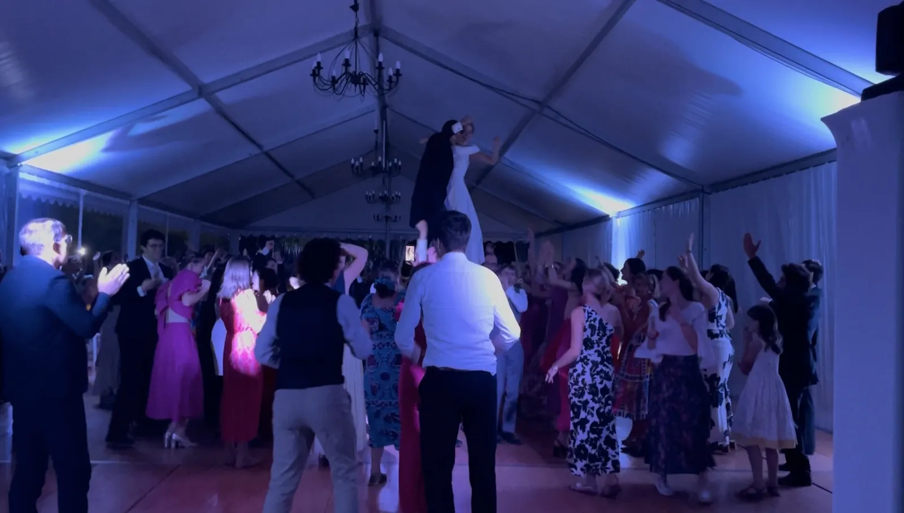

Nos prestations son et lumière.
Mariages, soirées d'entreprise, séminaires, rallyes et anniversaires de 40 à 600 invités : un matériel de sonorisation L-Acoustics et d'éclairage professionnel, installé avec soin et réglé pour votre lieu. Devis gratuit et détaillé sous 24 heures.
Le son, l'éclairage, sans compromis.
Que vous receviez 40 ou 600 personnes à Paris, dans toute la France ou en région, la sonorisation installe l'ambiance et la maintient toute la soirée. Nous sélectionnons le matériel selon le lieu et le public, pour mettre en valeur aussi bien les discours que la piste de danse.
Un matériel professionnel
Système de diffusion L-Acoustics (enceintes 12XT 380 W RMS, caissons SB118 600 W RMS, amplis LA4), micros sans fil Shure HF et régie adaptés à la taille de votre événement. Un éclairage piloté en direct par console Wolfmix.
Installation et réglages
Repérage du lieu si nécessaire, montage plusieurs heures avant l'arrivée de vos invités et réglages acoustiques sur place pour un son précis à tous les volumes. Les lumières soulignent chaque temps fort.
Un DJ-technicien présent
Le DJ qui assure votre soirée (Maxime ou Andéol) est aussi celui qui a monté et réglé l'installation. Il peut ainsi intervenir immédiatement si un ajustement s'impose, et dispose toujours de matériel de secours.
Événements d'entreprise
Séminaires, conventions, soirées de fin d'année, inaugurations à Paris et dans toute la France : une diffusion L-Acoustics claire pour les prises de parole et une ambiance musicale adaptée à chaque moment (de 40 à 600 invités).
- Sonorisation L-Acoustics de salles jusqu'à 600 personnes pour les discours et les tables rondes
- Micros sans fil Shure HF et écran géant disponibles pour vos présentations
- Bar à vinyles : plus de 500 disques sélectionnés par vos invités, une animation qui rapproche naturellement les collaborateurs
- Une sélection musicale accordée à vos équipes et à l'esprit de la soirée
Vous souhaitez nous confier aussi le lieu, le traiteur ou la photographie ? Découvrez notre organisation clé en main.
Demander un devis sous 24 h


Mariages
Une sonorisation L-Acoustics discrète qui accompagne chaque moment de la journée à Paris et dans toute la France. Les discours sont entendus jusqu'au fond de la salle, puis le DJ et la mise en lumière prennent le relais pour la soirée dansante (40 à 600 invités).
- Sonorisation de la cérémonie laïque ou religieuse possible en option
- Cocktail et discours : micros sans fil Shure HF et vidéoprojecteur disponibles
- Soirée dansante sur mesure avec une sélection qui réunit toutes les générations
- Rendez-vous de préparation avec votre DJ pour construire ensemble le déroulé



Rallyes, anniversaires & soirées privées
Anniversaires, rallyes, galas et soirées étudiantes : un son L-Acoustics puissant mais maîtrisé, et un devis adapté à vos envies comme à votre lieu. Nous dimensionnons le système (enceintes 12XT, caissons SB118) de 40 à 600 invités, et au-delà avec un dispositif renforcé (prestataires techniques partenaires et matériel complémentaire).
- Système L-Acoustics dimensionné selon le nombre d'invités et l'acoustique
- Adapté aux salles parisiennes, aux châteaux, aux jardins et aux chapiteaux
- DJ set construit selon l'ambiance souhaitée, avec vos demandes musicales


Pour aller plus loin...
Comparatif de nos formules DJ & sonorisation
| Formule | Type d'événement & Capacité | Inclus dans la prestation |
|---|---|---|
| Pack Mariage | Mariage, cocktail, discours & soirée dansante (40 à 600 invités) | DJ, diffusion L-Acoustics, micros HF Shure, mise en lumière pilotée, rendez-vous de préparation, installation anticipée |
| Pack Corporate & Séminaire | Soirée d'entreprise, convention, inauguration (40 à 600 invités) | Sonorisation L-Acoustics jusqu'à 600 personnes, micros HF Shure, éclairage architectural, DJ set sur mesure (option écran géant & bar à vinyles) |
| Pack Rallye & Anniversaire | Rallye, anniversaire, gala, soirée privée (40 à 600 invités) | Système L-Acoustics 12XT + caissons SB118, lyres Wash sur totems, PAR LED sur batterie, console DMX Wolfmix, DJ |